"Where Nature Paints its Beauty: Welcome to Odisha, the Land of
Enchanting Sand Art"
📍Odisha
Sand art "Welcome to ODISHA"

Odissi is a classical Indian dance form that originated in the state of Odisha. It is known for its graceful movements, intricate footwork, expressive facial expressions, and hand gestures. Odissi is deeply rooted in ancient Hindu religious traditions and mythology, often depicting stories from the epics like the Mahabharata and Ramayana. The dance form embodies both feminine grace and powerful energy, captivating audiences with its beauty and emotive storytelling. Through its intricate choreography and rich cultural heritage, Odissi continues to be celebrated as a significant and enchanting form of classical dance.
Odissi (The Dance Form of ODISHA)
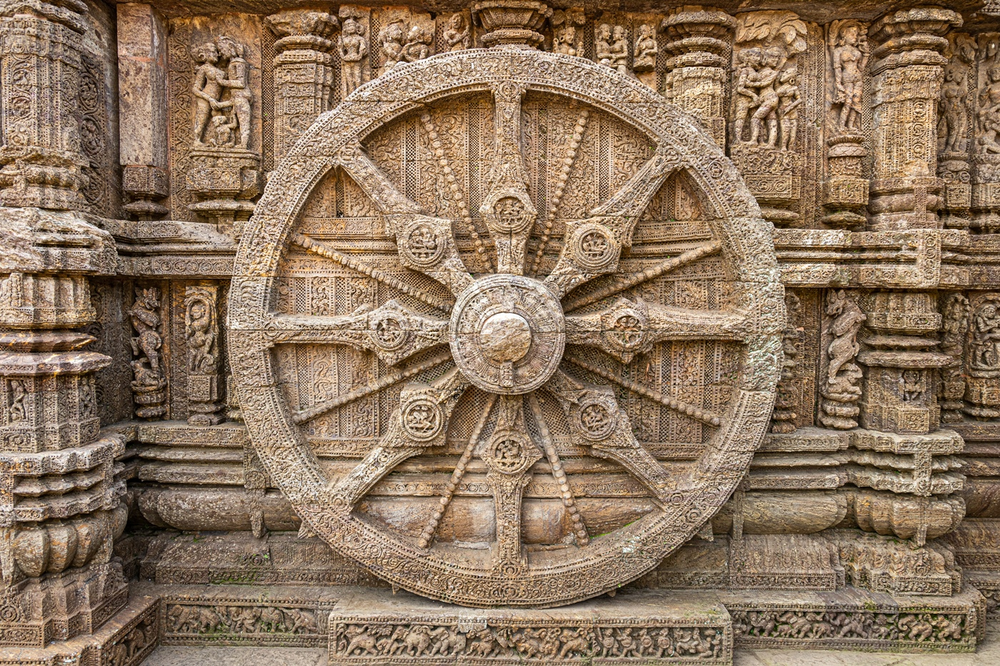
This is a wheel engraved in the 13th century built Konark Sun
Temple in Orissa, India. The temple is designed as a chariot
consisting of 24 such wheels. Each wheel has a diameter of 9
feet 9 inches with 8 spokes. Each wheel acts as a sun dial and
the various engravings shows the daily activity of people at
different hours of the day. This is a UNESCO World Heritage
site.
Konark Chakra
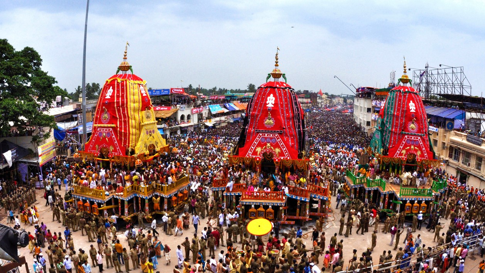
Ratha Yatra is a Hindu festival celebrated with great enthusiasm
in Odisha and other parts of India. It marks the annual journey
of Lord Jagannatha, Lord Balabhadra, and Devi Subhadra from
their main temple to the Gundicha Temple in a procession of
decorated chariots. Thousands of devotees gather to witness the
event, pulling the chariots through the streets with heartfelt
devotion and chants of "Jai Jagannatha". The festival is a
symbol of unity, love, and devotion, bringing people from all
walks of life together in celebration of their shared spiritual
heritage.
Ratha Yatra (Chariot Festival)
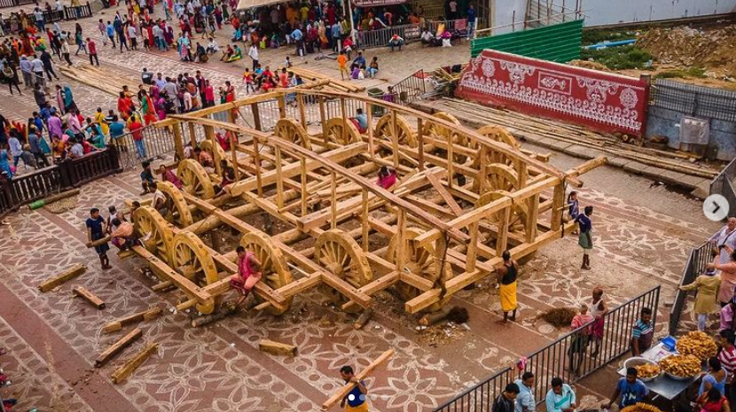
The process of making the Ratha for the Cart Festival
exemplifies the devotion and craftsmanship of the community. It
is a labor of love, representing the reverence and dedication of
the people towards Lord Jagannatha and the celebration of their
faith.
Ratha Making
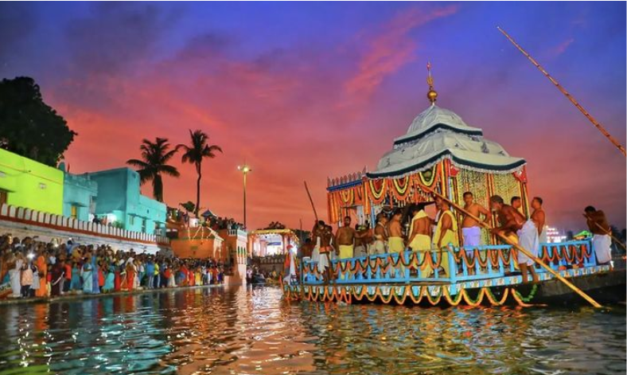
Chandan Yatra is a cultural and religious festival that
celebrates Lord Jagannatha's divine presence during the summer
season. It is a time of vibrant celebrations where devotees come
together to seek blessings, witness the grandeur of deities, and
experience spiritual fervor. It offers a unique opportunity for
devotees and visitors to participate in the joyful festivities
and witness the deep devotion of the community towards Lord
Jagannatha and his divine siblings.
Chandan Yatra

KIIT University, founded in 1992, is a prestigious institution in Bhubaneswar, Odisha, known for its academic excellence and multidisciplinary approach. With modern facilities, laboratories, libraries, and sports infrastructure, the university offers undergraduate and postgraduate programs, renowned faculty, research, innovation, entrepreneurship, and holistic development. It supports social responsibility through initiatives in healthcare, rural development, and welfare.
📍KIIT University
KIIT University
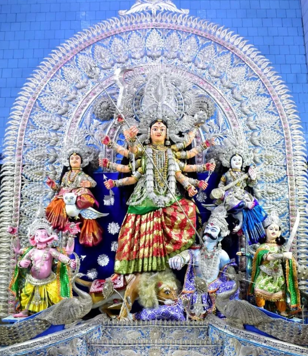
Dussehera in Cuttack, Odisha is a grand and vibrant celebration that showcases the unique cultural heritage of the region. The highlight is the grand procession of idols of Goddess Durga, known as the "Durga Bhasani". The festival also features various cultural performances, including folk dances, music concerts, and theatrical shows. The festival culminates with the immersion of the idols in the Mahanadi River, marking the triumph of good over evil. It is a must-visit destination for anyone seeking an immersive cultural experience.
Dussehera, Cuttack
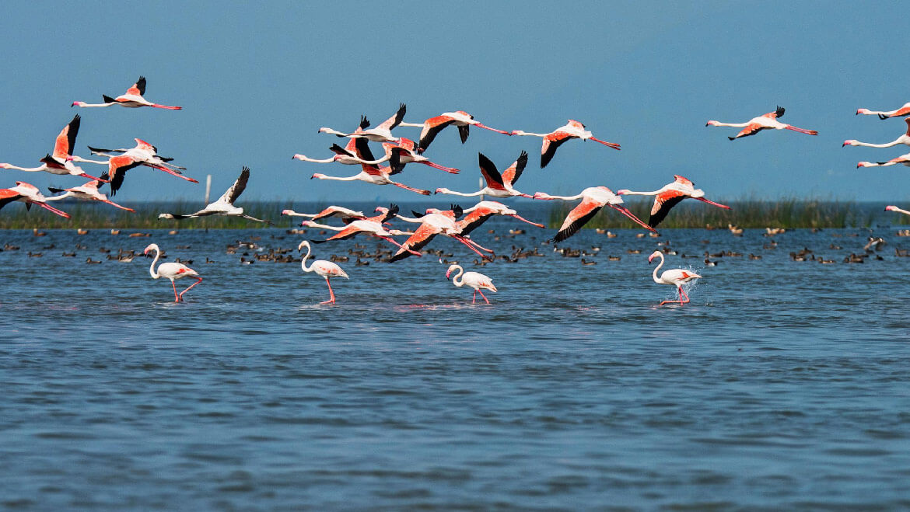
Chilika is a biodiversity hotspot and Ramsar site in Odisha, India, home to migratory birds, fish, and marine life, making it a paradise for birdwatching and wildlife enthusiasts.
📍Chilika Lake
Chilika Lake
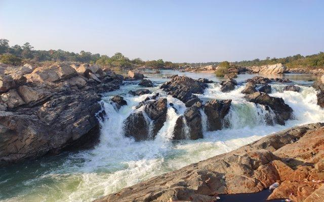
Bhimakunda Waterfall is believed to be the spot where Pandava prince Bhima created a water source by striking the ground with his mace. It holds immense religious significance and attracts devotees to offer prayers and seek blessings. It has become a popular tourist destination due to its natural beauty and historical associations.
📍Bhimkund Waterfall
Bhimkund Waterfall
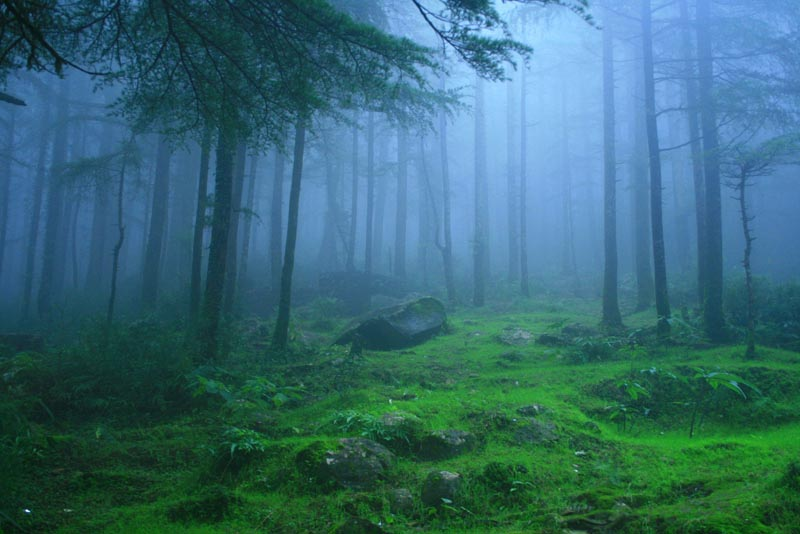
Daringbadi, located in Kandhmal, Odisha, is a scenic hill station known as the "Kashmir of Odisha." It has a pleasant climate and misty landscapes throughout the year. With coffee plantations, waterfalls, and orchards, it's a great place for nature lovers. The town also offers a glimpse of indigenous tribal culture and delicious local food. Daringbadi is a peaceful retreat where visitors can relax, enjoy nature, and experience the local charm.
📍Daringbadi Hill Station
Daringbadi Hill Station
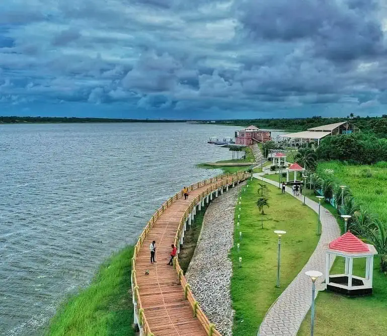
Tampara Lake, a serene freshwater lake in Odisha's Ganjam district, is a popular destination for boating, water sports, and bird watching. Surrounded by lush greenery and scenic landscapes, it offers a serene escape from city life, providing a peaceful retreat for relaxation and reconnecting with nature. Visitors can enjoy activities like kayaking and canoeing, and the lake attracts migratory and resident bird species like spot-billed pelicans, herons, cormorants, and kingfishers.
📍Tampara Lake
Tampara Lake
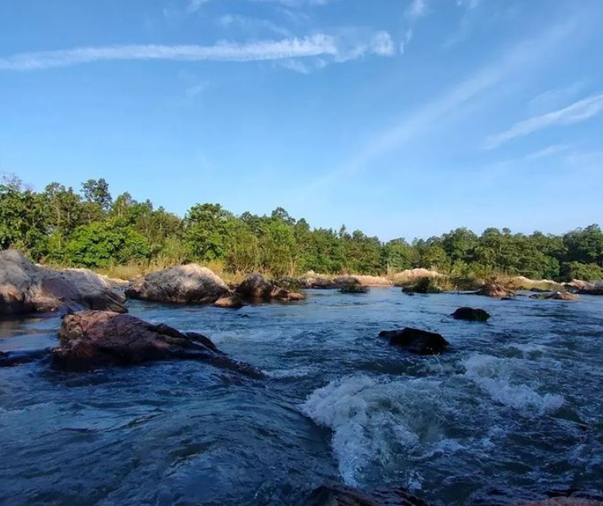
Gundichaghagi Waterfall is a popular tourist destination in Keonjhar district of Odisha. It is located about 12 km from Ghatagaon Maa Tarini temple and 55 km from Keonjhar Town. The waterfall is formed by the Musala River and is about 50 feet high. The waterfall is surrounded by lush green forest and is a popular spot for picnics and trekking.
📍Gundicha Ghagi Waterfall
Gundicha Ghagi Waterfall
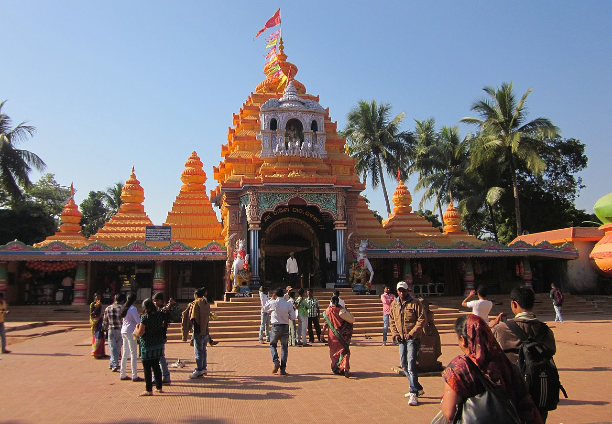
Maa Tarini Temple, located in Odisha, is a revered Hindu shrine dedicated to the divine goddess Maa Tarini. Devotees visit the temple to seek blessings and offer prayers to the goddess. The temple exudes a peaceful and spiritual ambiance, attracting people from all walks of life. It is believed that Maa Tarini grants devotees their wishes and provides protection and guidance. The temple holds a special place in the hearts of devotees, who experience a sense of peace and fulfillment in the presence of Maa Tarini.
📍Maa Tarini Temple
Maa Tarini Temple
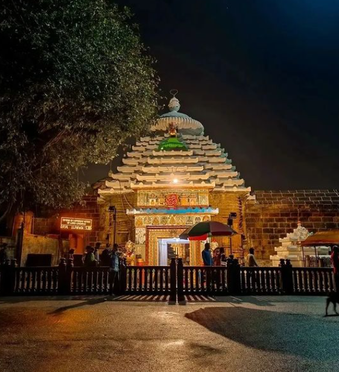
Lingaraj Temple is a Hindu temple dedicated to Shiva, located in
Bhubaneswar, Odisha. It is one of the oldest and most important
temples in Bhubaneswar, and is decorated with sculptures of
Hindu deities. It is a popular pilgrimage destination and
tourist attraction.
📍Lingaraj Temple
Lingaraj Temple
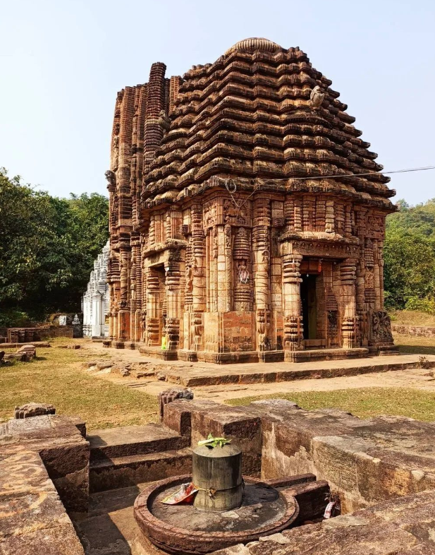
Banasur Temple is a Hindu temple dedicated to Lord Shiva located
in Barapurikia, Odisha, India. It is a two-storey structure with
a pyramidal roof and a central sanctum sanctorum with a Shiva
lingam.
📍Banasur Temple
Banasur Temple
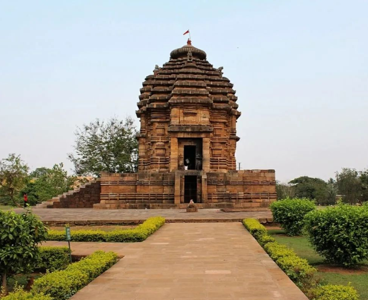
Bhaskareswar Temple is a Hindu temple dedicated to Shiva located
in Bhubaneswar, Odisha, India. It has five shrines arranged in a
quincunx pattern and is built in the Kalinga style of
architecture. It is a popular pilgrimage and tourist
destination, and is free to visit.
📍Bhaskareswar Temple
Bhaskareswar Temple
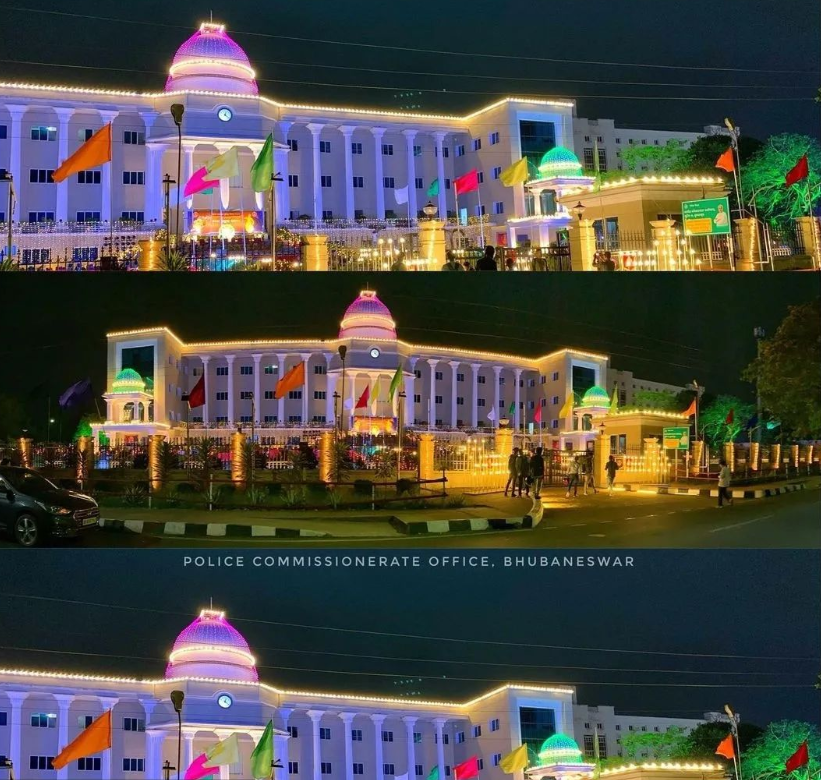
The Police Commissionerate Office in Bhubaneswar, Odisha is a
beautiful and imposing building. It is located in the heart of
the city, and is a landmark that is easily recognizable.
📍Police Commissionerate Office
Police Commissionerate Office
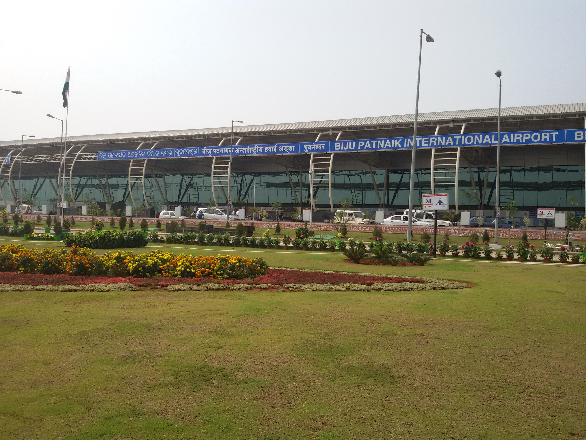
Biju Patnaik International Airport, named after Odisha's visionary leader Biju Patnaik, is the primary gateway to the state. Named after the visionary leader, it serves as a major hub for domestic and international air travel, offering modern facilities and amenities. It is well-connected to various destinations and plays a crucial role in promoting economic development in the region. The airport's strategic location and efficient services contribute to Odisha's connectivity with the rest of the country and the world.
📍Biju Patnaik International Airport
Biju Patnaik International Airport

Veer Surendra Sai Airport, named after freedom fighter Veer Surendra Sai, is a modern, well-equipped gateway to western Odisha. Named after him, it connects the region with major Indian cities, offering enhanced connectivity and convenience for travelers. With advanced infrastructure, state-of-the-art terminal building, and efficient passenger services, it is a vital hub for business, tourism, and economic development in the region.
📍Veer Surendra Sai Airport, Jharsuguda
Veer Surendra Sai Airport, Jharsuguda
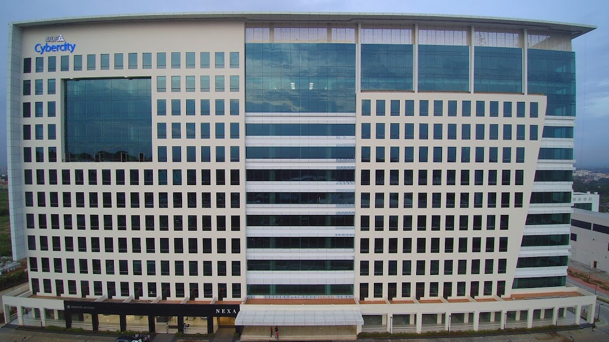
DLF Cybercity Bhubaneswar is an IT and business hub in Odisha, offering modern infrastructure, world-class facilities, and a conducive environment. Strategically located near the city center, it attracts top talent and generates job opportunities. The complex offers retail outlets, restaurants, cafes, and recreational facilities.
📍DLF CyberCity
DLF CyberCity
TOPNOTCH is Odisha's first life style party destination presenting the best and finest entertainment redefining standards of luxury and clubbing.
📍TopNotch Air
TopNotch Air
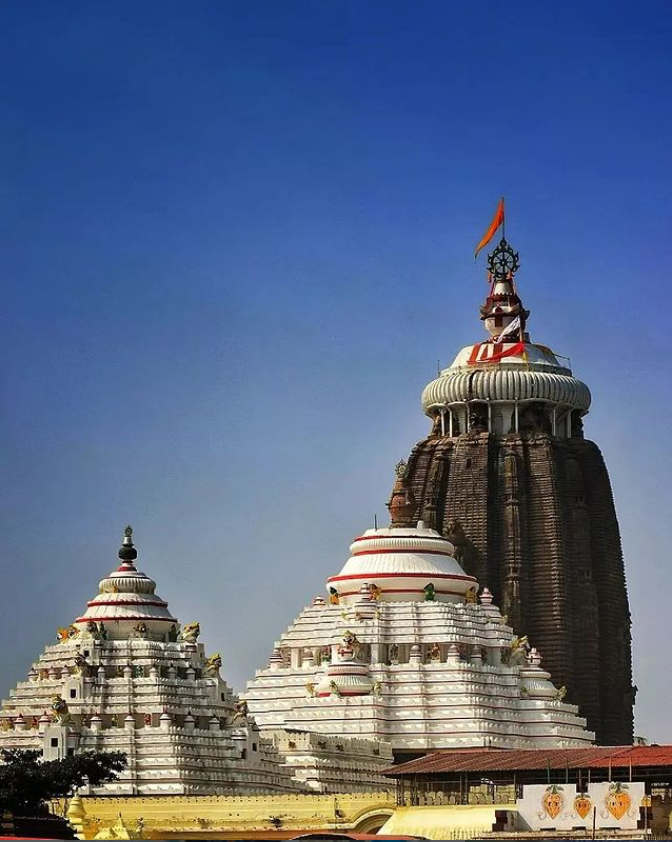
The Shri Jagannath Temple is a Hindu temple located in Puri,
Odisha, India. It is one of the most important pilgrimage sites
in Hinduism, and is dedicated to Jagannath, a form of Vishnu.
The temple is believed to have been built in the 12th century,
and is a UNESCO World Heritage Site. It is a massive structure,
with a 214-foot-tall (65 m) tower. The temple is home to three
deities: Jagannath, Balabhadra, and Subhadra. The deities are
believed to be incarnations of Vishnu, Krishna, and Balarama.
The temple is visited by millions of pilgrims every year. The
temple is a major center of Hindu culture and tradition.
📍Shri Jagannatha Temple, Puri
Shri Jagannatha Temple, Puri

The Konark Sun Temple, located in Odisha, India, is a UNESCO World Heritage Site renowned for its architectural splendor and historical significance. Built in the 13th century, the temple is dedicated to the Sun God, Surya. It is designed in the shape of a massive chariot with intricately carved stone wheels, pillars, and walls depicting various mythological scenes. The temple's architectural grandeur, detailed sculptures, and artistic finesse make it a masterpiece of ancient Indian architecture. Despite being partially in ruins, the Konark Sun Temple continues to inspire awe and captivate visitors with its rich cultural heritage and timeless beauty.
📍Konark Sun Temple
Konark Sun Temple
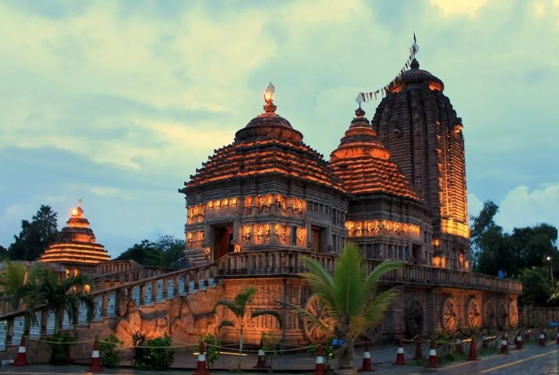
The Emami Shri Jagannatha Temple is a modern temple dedicated to
Lord Jagannatha in Balagopalpur, Odisha. It features stunning
sculptures, intricate carvings, and beautiful landscaping,
creating a serene and spiritually uplifting atmosphere. Devotes
can offer prayers to Lord Jagannatha, Lord Balabhadra, and Devi
Subhadra, immersing themselves in the divine aura of the temple.
It offers a unique and enriching spiritual experience.
📍Emami Shri Jagannatha Temple
Emami Shri Jagannatha Temple

The Nandighosha cart is a significant part of the Cart Festival,
also known as Ratha Yatra, celebrated in Odisha. It symbolizes
the divine presence of Lord Jagannatha during the festival and
is pulled by devotees with great zeal and reverence. It carries
the deities on their annual journey from the main temple to the
Gundicha Temple, creating an atmosphere of spiritual bliss. The
Nandighosha cart embodies the magnificence and devotion of the
Cart Festival, leaving a lasting impression on all who witness
its grandeur.
Nandighosha Cart
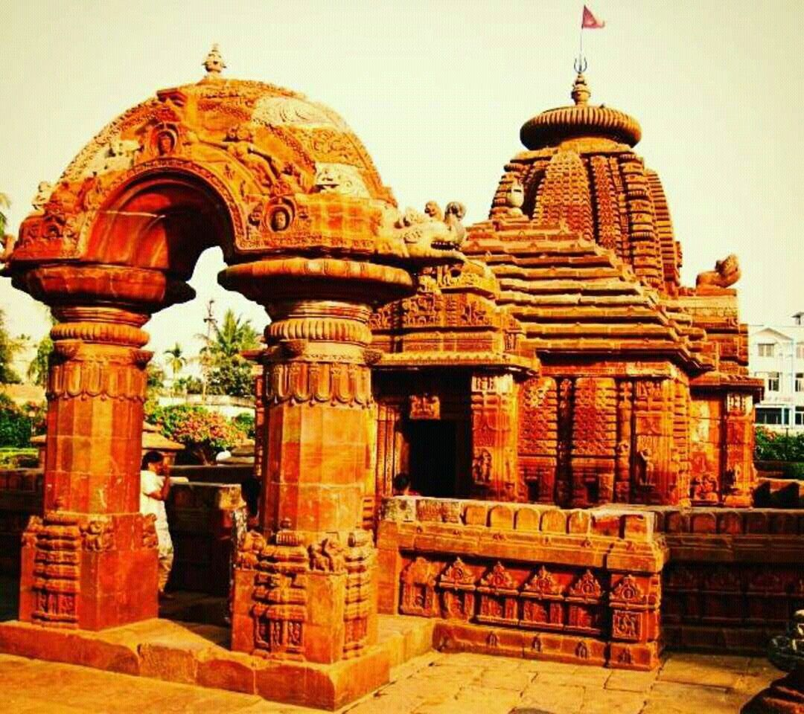
The Mukteswara Temple is a 10th-century temple in Bhubaneswar,
Odisha, renowned for its exquisite sculptures, intricate
carvings, and architectural finesse. It is dedicated to Lord
Shiva and features an arched entrance, intricately carved
torana, and an ornate spire adorned with sculptures. Devotees
flock to the temple to seek blessings and experience divine
energy.
📍Mukteswara Temple
Mukteswara Temple
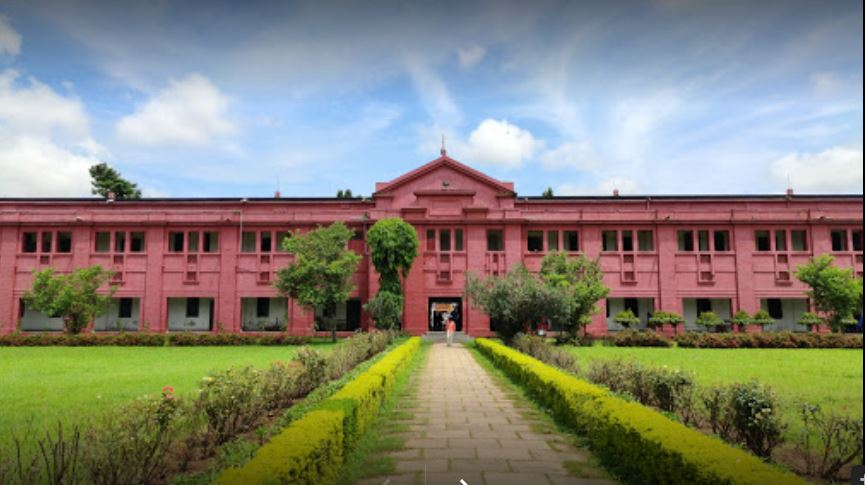
Ravenshaw University, established in 1868, is a prestigious educational institution in Cuttack, Odisha. With a rich history and diverse programs, Ravenshaw offers undergraduate, postgraduate, and doctoral degrees in arts, science, commerce, management, and technology. The university boasts academic excellence, experienced faculty, and state-of-the-art facilities. Its campus features gardens, historical buildings, and a strong alumni network, making it a preferred choice for students seeking quality education and a vibrant learning environment.
📍Ravenshaw University
Ravenshaw University
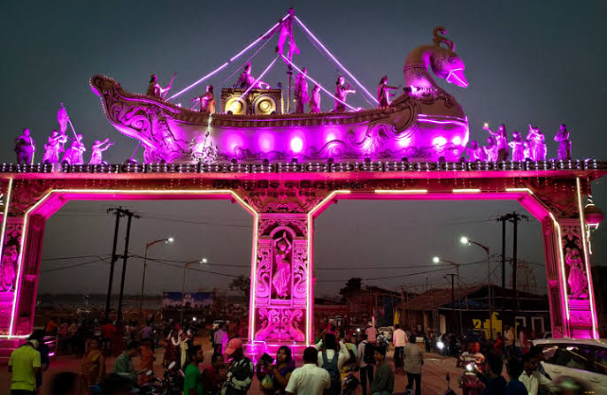
Aitihasika Balijatra is a traditional fair held in Cuttack, Odisha, with a history dating back centuries. The fair is known for its cultural, historical, and commercial significance. It brings together artisans, craftsmen, and traders who showcase their wares, including handcrafted items, textiles, and traditional Odishan artworks. The fair also features various cultural performances, such as folk dances, music, and theater, providing visitors with a glimpse into the rich cultural heritage of the region. Aitihasika Balijatra is a vibrant and festive event that attracts locals and tourists alike, fostering a sense of community, celebration, and appreciation for Odisha's historical roots.
📍Aitihasika Balijatra Ground
Aitihasika Balijatra
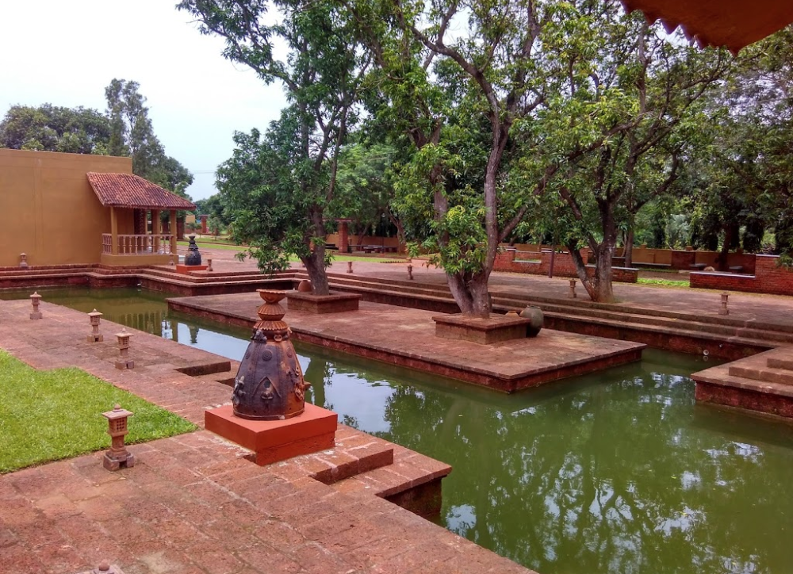
Kala Bhoomi, a museum in Bhubaneswar, Odisha, showcases the diverse arts, crafts, and heritage of the state. It offers a comprehensive experience, showcasing traditional craftsmanship, textiles, paintings, sculptures, and various art forms. The museum also hosts interactive displays, workshops, and demonstrations, allowing visitors to engage with local artisans and learn about their creative processes. The serene ambiance and well-manicured gardens enhance the overall experience.
📍Kala Bhoomi
Kala Bhoomi
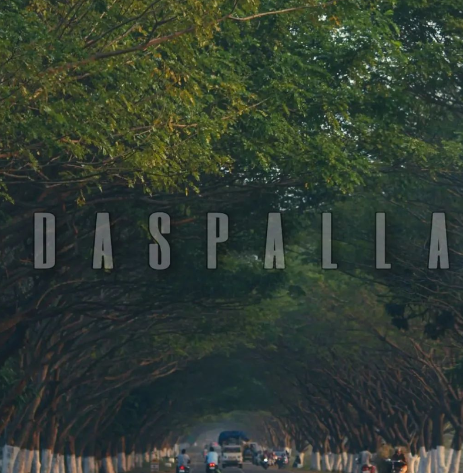
Dasapalla is a small town located in the Nayagarh district of Odisha, India. Known for its historical significance, Dasapalla has a rich heritage that dates back to ancient times. The town is home to several ancient temples, including the famous Dasapalla Jagannath Temple, which attracts devotees and tourists alike. Surrounded by picturesque landscapes and greenery, Dasapalla offers a tranquil and serene atmosphere. The town also holds cultural and religious events throughout the year, providing visitors with a glimpse into the vibrant traditions of Odisha.
📍Daspalla
Daspalla
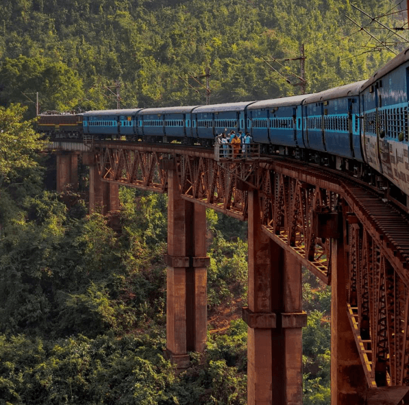
Maligura, meaning "Village of Malis," is a popular tourist destination in Odisha, India. The Malis, a unique tribe, built the tallest railway tunnel in India, surrounded by lush green mountains.
📍Maligura Tunnel
Maligura Tunnel
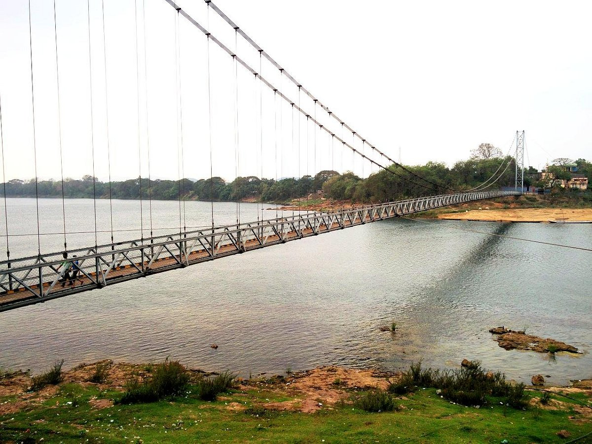
The Dhabaleswar Hanging Bridge is a suspension bridge connecting Dhabaleswar Island to the mainland, offering panoramic views of the river and surrounding landscapes. It is an architectural marvel, combining functionality and aesthetic appeal. It is a must-visit destination for those seeking a memorable and picturesque experience.
📍Dhabaleswar Hanging Bridge
Dhabaleswar Hanging Bridge
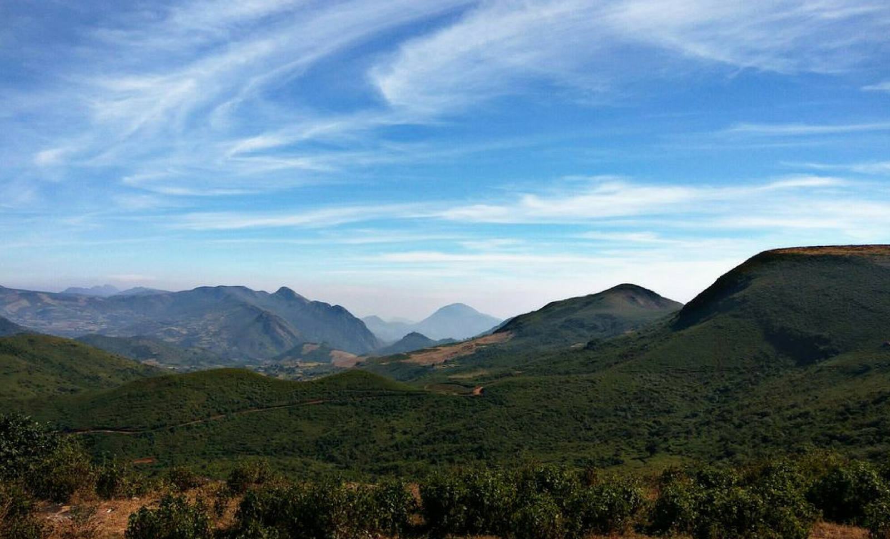
Deomali, Odisha's tallest mountain peak, is a popular tourist destination with activities like trekking, mountaineering, and hang gliding. The region is rich in resources like bauxite, limestone, and gemstones, and offers stunning views over valleys.
📍Deomali
Deomali: Mountain Peak
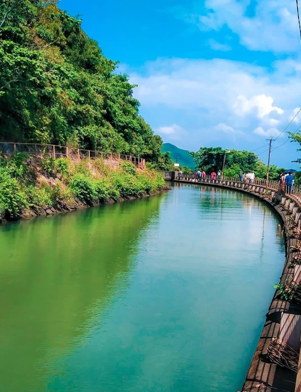
The Heart of Chipilima is a captivating tourist attraction located near Sambalpur in Odisha. It is a breathtaking waterfall formed by the majestic river Mahanadi. The cascading waters create a mesmerizing spectacle that captivates visitors. Surrounded by lush greenery and scenic landscapes, the Heart of Chipilima offers a serene and tranquil ambiance. It is a popular spot for picnics, nature walks, and photography, providing a refreshing escape from the hustle and bustle of daily life.
📍Heart of Chipilima
Heart of Chipilima
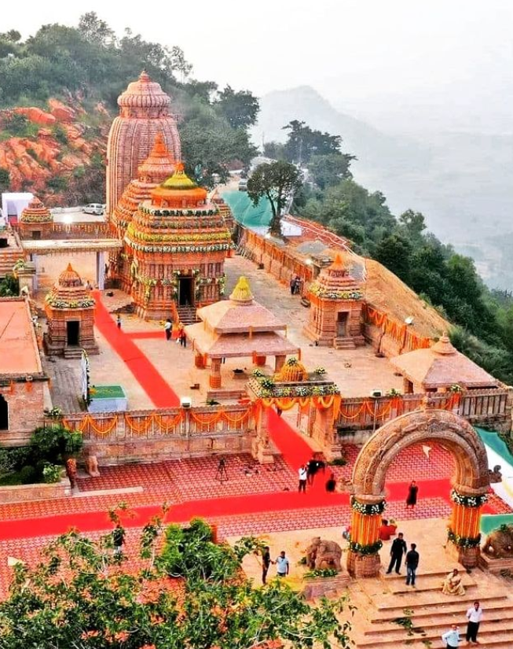
Maa TaraTarini Shaktipeetha is a popular pilgrimage center for
Hindus in India, dedicated to Maa Tara, one of the many forms of
Durga. It is believed to be one of the four major Shakti Peethas
associated with the body parts of Sati, the consort of Shiva.
📍Maa TaraTarini Shaktipeetha
Maa TaraTarini Shaktipeetha
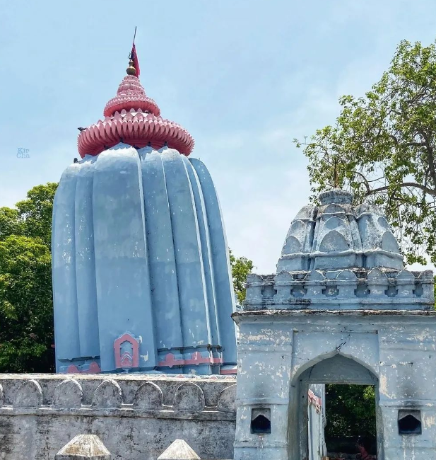
The Leaning Temple of Huma is a unique and fascinating place
dedicated to Lord Bimaleshwar. It was built in the 17th century
and is one of only a few leaning temples in the world. It is
made of red sandstone and has intricate carvings and sculptures,
as well as religious artifacts. It is a popular tourist
destination and pilgrimage for Hindus.
📍The Leaning Temple of Huma
The Leaning Temple of Huma
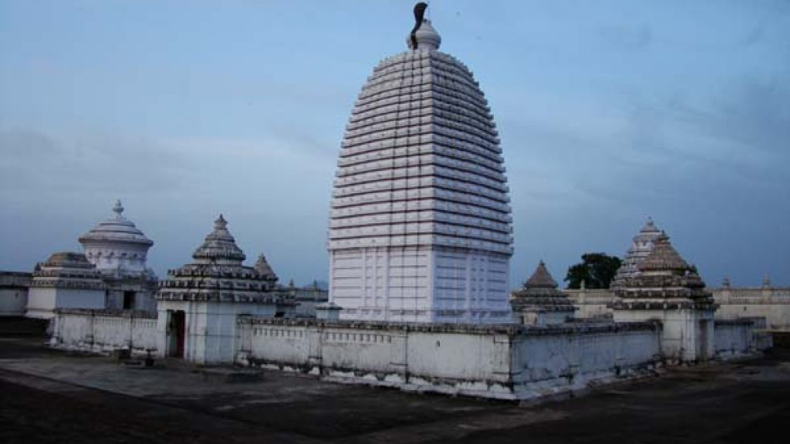
Joranda, the religious headquarters of Mahima Dharma, houses the samadhi of Mahima Gosain and other sacred tamples. The fair attracts large numbers of pilgrims on full moon day of Magha.
📍Joranda Temple
Joranda Temple
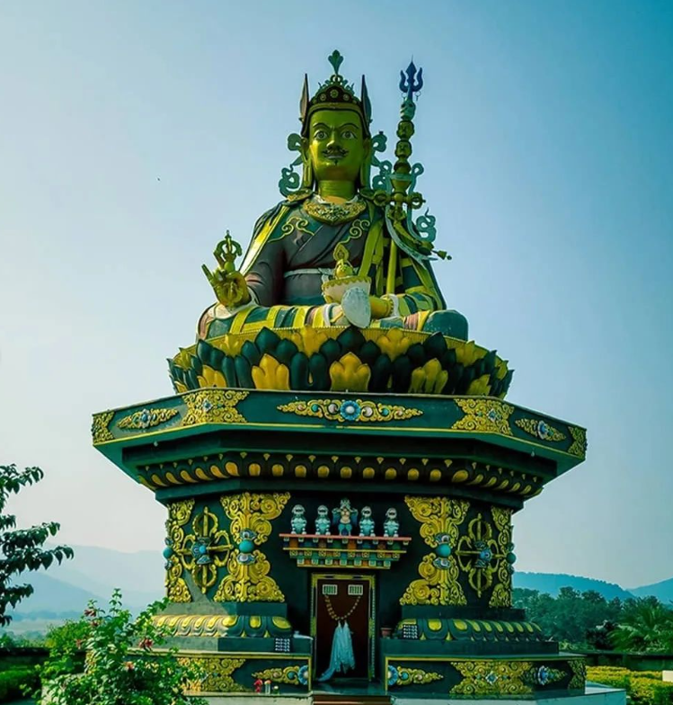
Mahendragada Monastery is a Buddhist monastery located in the
Gajapati district of Odisha, India. It was founded in the 1990s
by a group of Tibetan monks who fled Tibet after the Chinese
invasion in 1959. The monastery is home to over 100 monks and
nuns, and it is a popular destination for pilgrims and tourists.
The monastery is known for its beautiful architecture, its
peaceful atmosphere, and its rich spiritual heritage.
📍Mahendragada Monastery
Mahendragada Monastery
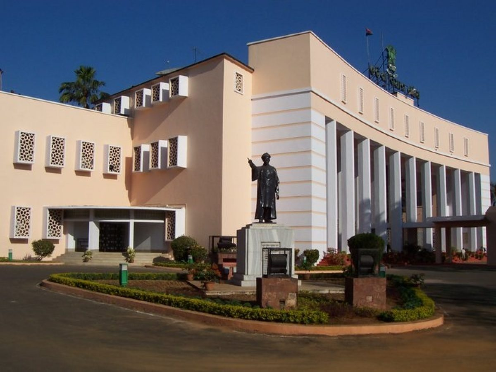
The Odisha Vidhan Sabha, located in Bhubaneswar, is the legislative assembly building in Odisha, India. Its architectural masterpiece blends modern design with traditional Odishan influences, featuring intricate carvings and a grand facade reflecting the region's cultural heritage. The Sabha is a symbol of democratic governance and a pride for the people of Odisha.
📍Odisha Vidhan Soudha
Odisha Vidhan Soudha
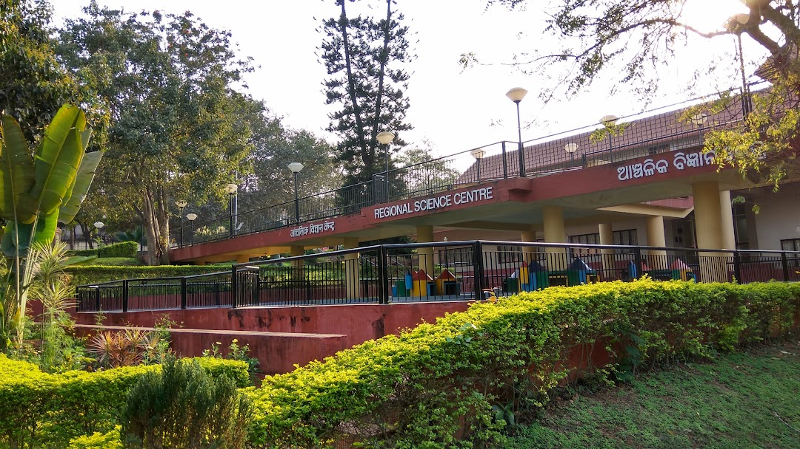
The Regional Science Centre in Bhubaneswar, Odisha, combines education, entertainment, and scientific exploration to promote scientific knowledge and innovation. It offers interactive exhibits, engaging displays, and hands-on activities, allowing visitors to explore technology, astronomy, and the natural world. This destination inspires a love for science and fosters scientific temperament among youth and the general public.
📍Regional Science Centre Bhubaneswar
Regional Science Centre Bhubaneswar
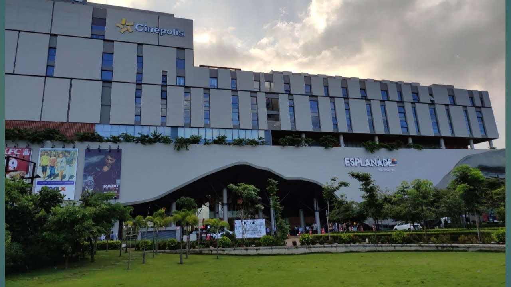
Esplanade One Mall in Bhubaneswar offers a diverse shopping and entertainment experience with renowned brands. It offers recreational activities, multiplex cinema, gaming zones, and a kids' play area. The mall also features a food court, restaurants, and cafes.
📍Esplanade One Mall, Bhubaneswar
Esplanade One Mall, Bhubaneswar

Hotel Mayfair Lagoon in Bhubaneswar is a luxurious, iconic hotel offering a blend of opulence and natural beauty. Nestled amidst lush gardens and lagoons, it offers elegant rooms and suites with modern amenities and stylish furnishings. The hotel's impeccable service and warm hospitality ensure a memorable stay. Guests can enjoy fine dining, dining options, and recreational facilities like a swimming pool, spa, fitness center, and outdoor activities. This location makes Hotel Mayfair Lagoon a destination in itself, providing a memorable experience for both business and leisure travelers.
📍Hotel Mayfair Lagoon, Bhubaneswar
Hotel Mayfair Lagoon, Bhubaneswar
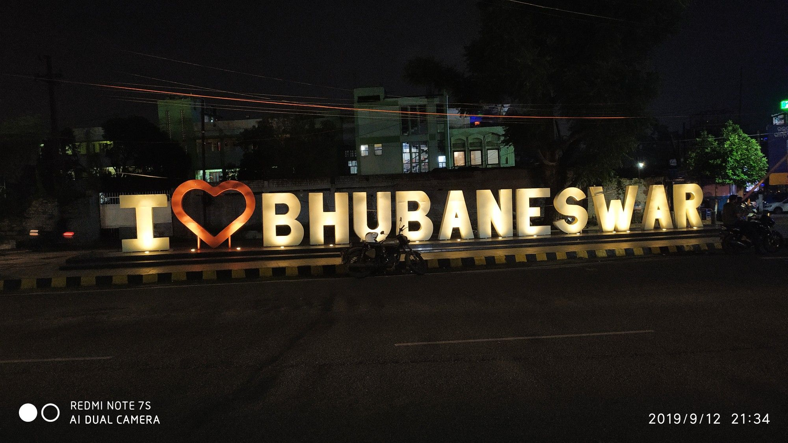
Bhubaneswar is a vibrant and culturally rich metropolis, known as the "Temple City of India" for its architectural marvels, historic temples, and religious significance. It is also a growing IT and education center, with well-planned infrastructure, green spaces, and cosmopolitan atmosphere.
📍Bhubaneswar
Bhubaneswar
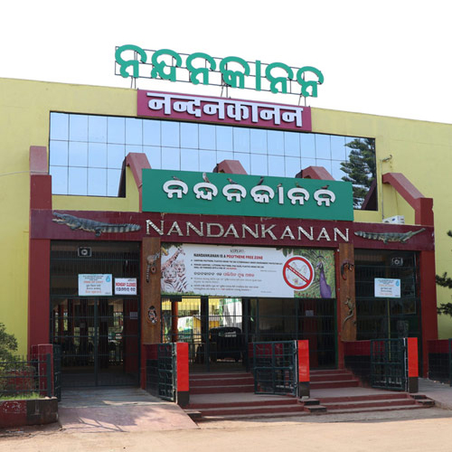
Nandankanan Zoological Park is a renowned wildlife sanctuary in Bhubaneswar, Odisha, home to a diverse range of animal species and a botanical garden and aquarium. It is a popular destination for wildlife enthusiasts, nature lovers, and families looking to connect with nature and learn about conservation and Nandankanan is the first zoo in the World to breed White tiger and Melanistic tiger. Nandankanan is the only conservation breeding centre of Indian Pangolins in the world.
📍Nandankanan Zoological Park
Nandankanan Zoological Park
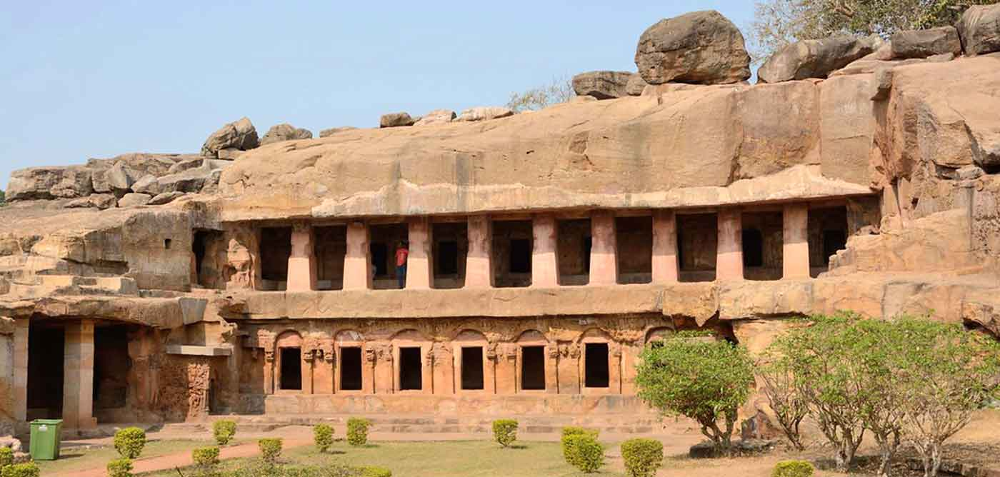
KhandaGiri, located near Bhubaneswar in Odisha, is a popular tourist destination known for its ancient Jain caves and monastic complexes. The name "KhandaGiri" translates to "broken hill," and it refers to the rugged and rocky terrain of the site. The caves at KhandaGiri showcase intricate carvings, inscriptions, and sculptures depicting Jain deities, celestial beings, and mythological figures. Visitors can explore the caves, marvel at the architectural details, and enjoy panoramic views of the surrounding landscape. KhandaGiri offers a serene and peaceful environment, making it an ideal place for spiritual seekers and history enthusiasts.
📍KhandaGiri
KhandaGiri
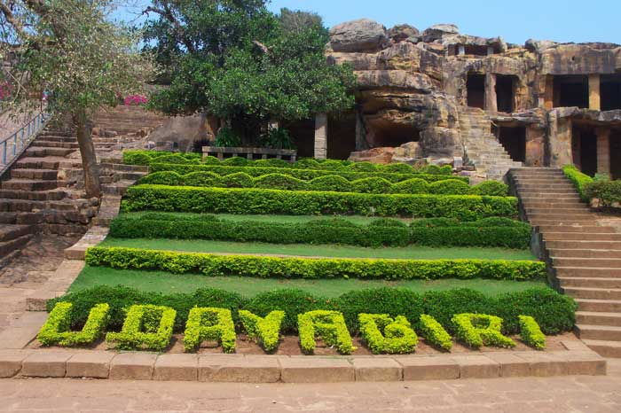
Udayagiri, located near Bhubaneswar in Odisha, is a historic site known for its ancient caves and rock-cut sculptures. Dating back to the 1st century BCE, these caves served as dwelling places for Jain monks. The caves feature intricate carvings depicting Jain deities, mythical creatures, and scenes from Jain mythology. Exploring the caves of Udayagiri provides a glimpse into the rich tapestry of art and history, showcasing the architectural mastery of the time. With its serene surroundings and captivating sculptures, Udayagiri offers a fascinating experience for history enthusiasts and art lovers alike.
📍UdayaGiri
UdayaGiri

DhauliGiri is a significant historical site located on the
outskirts of Bhubaneswar in Odisha. It is home to the Peace
Pagoda, a symbol of peace and non-violence built by the Japanese
Buddhist organization Nipponzan Myohoji. Visitors can explore
the ancient rock edicts of Emperor Ashoka, which emphasize the
principles of moral conduct and harmony.
📍DhauliGiri
DhauliGiri
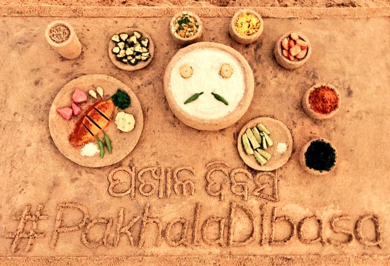
Pakhala Dibasa is a unique celebration in Odisha, India, dedicated to the traditional dish "pakhala". It celebrates simplicity, unity, and the cultural traditions of Odisha, and is a symbol of pride and preservation.
Sand Art (#PakhalaDibasa)
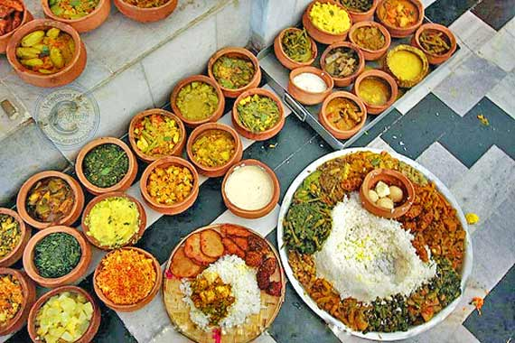
Shri Jagannatha Maha Prasad is a unique and sacred offering prepared with devotion and pure ingredients. It is believed to purify the soul and bestow blessings from Lord Jagannath. Devotees from all walks of life eagerly partake in the Mahaprasad, believing it is a divine offering that purifies the soul and bestows blessings.
Maha Prasad
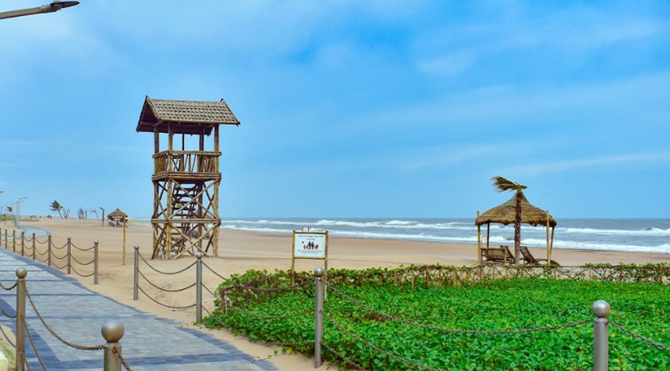
Golden Beach is the beautiful golden sand found here. The beach is located near the popular Jagannath Temple and is considered sacred by Hindus. Golden Beach is home to the annual Puri Beach Festival, which celebrates local culture and attracts thousands of visitors every year.
📍Golden Sea Beach
Golden Sea Beach
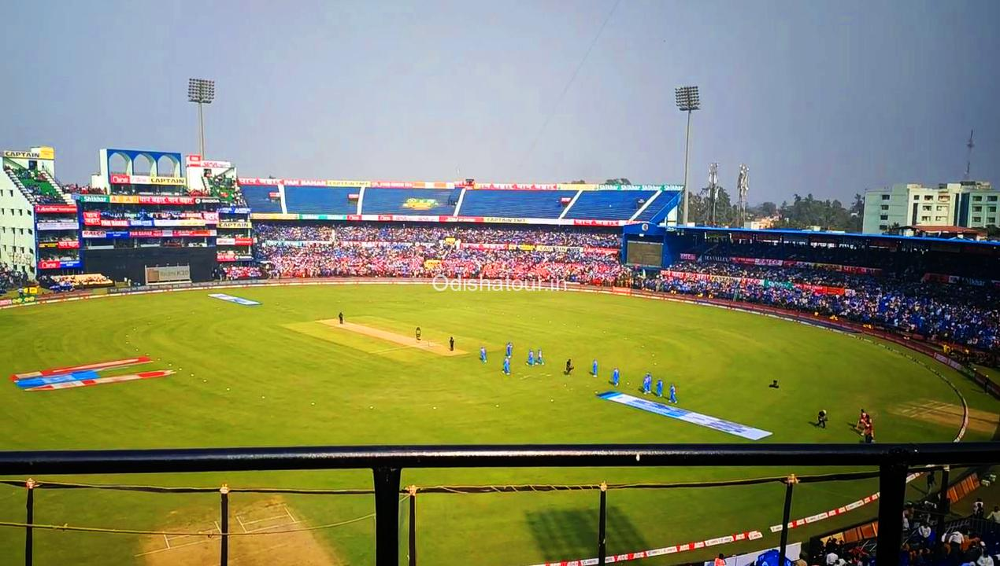
Barabati Stadium, located in Cuttack, Odisha, is a renowned cricket venue with a seating capacity of around 45,000 spectators. Named "Barabati," it translates to "the big mound" and is a landmark sports venue. With a picturesque location on the Mahanadi River, the stadium has hosted numerous domestic and international matches, including One-Day Internationals and T20 Internationals. With well-maintained facilities, floodlights, pavilions, and modern infrastructure, Barabati Stadium remains a must-visit destination for sports enthusiasts in Odisha.
📍Barabati Stadium
Barabati Stadium
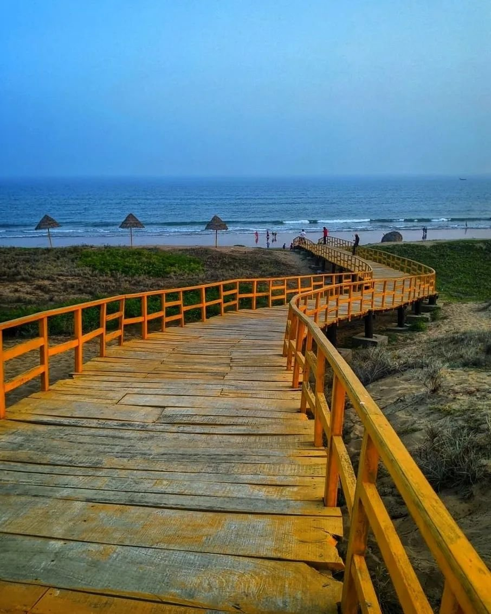
Gopalpur Sea Beach, located in the Ganjam district of Odisha, is a serene and picturesque coastal destination. With its golden sands, clear blue waters, and gentle waves, it offers a perfect retreat for beach lovers. The beach is known for its tranquil ambiance and breathtaking sunrises and sunsets that paint the sky in vivid hues. It is an ideal spot for leisurely walks, sunbathing, and enjoying water sports activities. The presence of charming fishing boats and a few resorts along the shoreline adds to the coastal charm of Gopalpur Sea Beach.
📍Gopalpur Sea Beach
Gopalpur Sea Beach
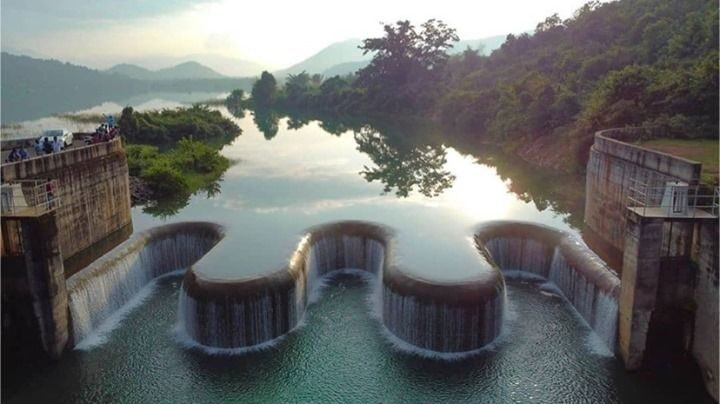
Sapua Dam is a man-made reservoir in Dhenkanal, Odisha that serves as a water storage facility and provides recreational activities. It has contributed to the development of the region by enhancing agricultural productivity and providing a source of livelihood.
📍Sapua Dam
Sapua Dam
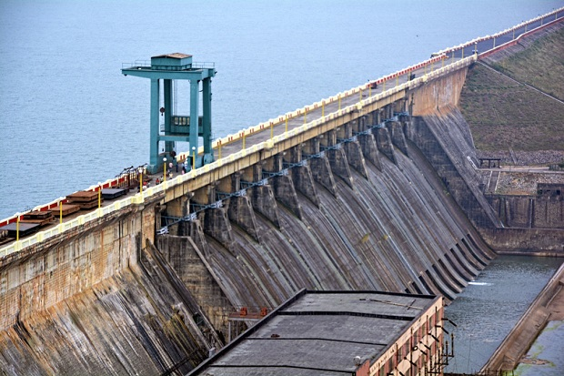
Hirakud Dam is the longest major earthen dam in the world, measuring 25.8 kilometers (16.0 miles) including dykes, and stands across the river Mahanadi. It is located in Sambalpur district of Odisha, India. The dam was built between 1948 and 1957, and is one of the first major multipurpose river valley projects started after India's independence. Hirakud Dam is a major source of hydroelectric power and irrigation water for Odisha. The dam also helps to control floods and improve navigation on the Mahanadi River. Hirakud Dam is a popular tourist destination, and visitors can enjoy activities such as boating, fishing, and swimming.
📍Hirakud Dam
Hirakud Dam
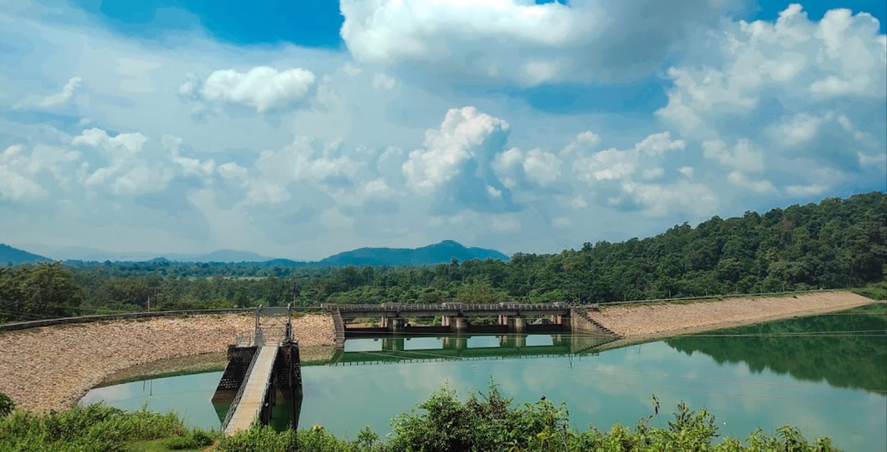
Dandadhar Dam, a significant water reservoir in Odisha, is a multipurpose project on the Brahmani River. It provides irrigation, drinking water, and flood control, while offering scenic beauty, boating, and fishing opportunities. The dam plays a vital role in water resource management and overall development.
📍Dandadhar Dam
Dandadhar Dam
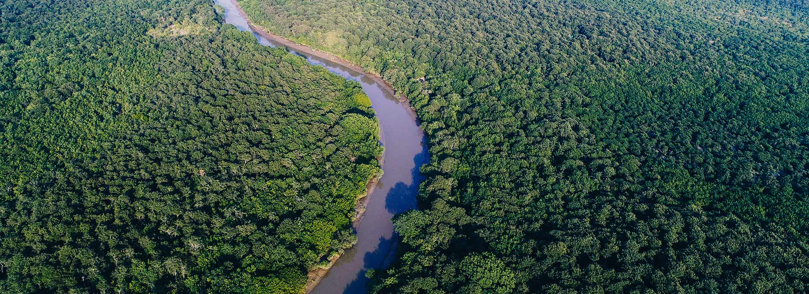
Bhitarkanika National Park in Odisha, India, is a biodiverse ecosystem with mangrove forests and diverse wildlife. It hosts the largest saltwater crocodile population and features endangered white ibis and Asian openbill stork.
📍Bhitarkanika National Park
Bhitarkanika National Park
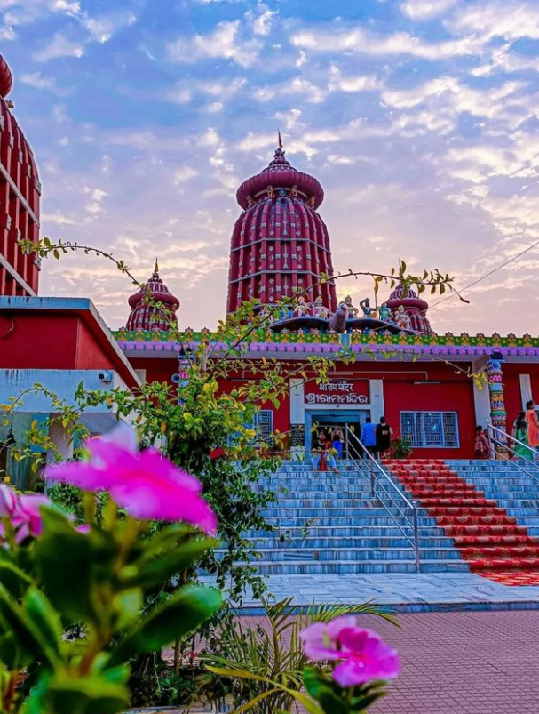
Ram Mandir is a revered Hindu temple dedicated to Lord Rama in Bhubaneswar, known for its beautiful architecture and spiritual ambiance. It hosts religious ceremonies and festivities throughout the year and features a sacred pond called "Ram Kund".
📍Shree Ram Mandir, Bhubaneswar
Shree Ram Mandir, Bhubaneswar
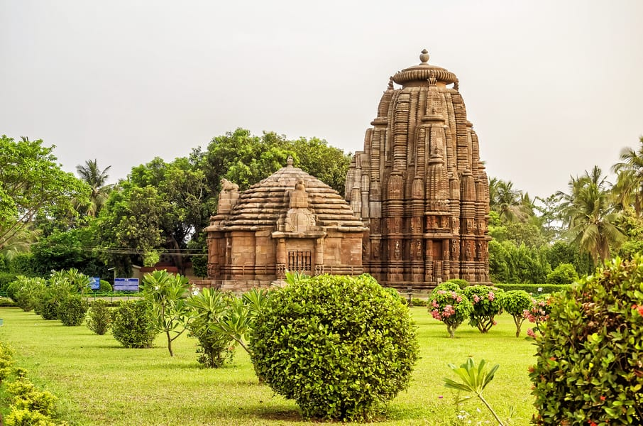
The Raja Rani Temple is a mesmerizing example of Odishan temple
architecture, dedicated to the celebration of love and union of
Lord Shiva and Goddess Parvati.
📍Raja Rani Temple
Raja Rani Temple
The Parshurameshwar temple is the best preserved example of an early Odia Hindu temple in Bhubaneswar, Odisha, India. It is believed to have been constructed around 650 CE in the Nagara style and has carved representations of Shakta gods such as Chamunda, Varahi, Indrani, Vaishnavi, Kaumari, Shivani and Brahmi.
📍Parshurameshwar temple
Parshurameshwar temple
Kapilas range's highest peak, Chandrasekhar, houses Lord Shiva's temple at 457 meters. Thousands visit on Mahasivaratri, a month consecrated to Shiva. The hill features caves and ruins of a medieval fort, with some associated with Pauranic episodes. Kapilas is also home to Shridhar Swami, a prominent commentator and founder of Mahima Cult.
📍Kapilash Temple
Kapilash Temple
Maa Samaleswari Temple is a revered Hindu temple dedicated to Maa Samaleswari, a form of the Divine Mother Goddess. It is located in Sambalpur, Odisha and holds immense religious significance. It is known for its annual festivals, such as Chaitra and Ashwin Navratri, and is a testament to the rich heritage and spirituality of Odisha. A visit to the temple offers a chance to experience devotion, traditions, and spiritual fervor.
📍Maa Samaleswari Temple
Maa Samaleswari Temple
The Birsa Munda Hockey Stadium in Rourkela, Odisha, is a state-of-the-art facility dedicated to hockey, named after tribal leader Birsa Munda. With a world-class synthetic turf, it hosts numerous national and international events, including the 2018 Men's Hockey World Cup. The stadium has become a hub for training and nurturing young talent, with modern facilities and coaching programs in place. Its electric atmosphere and passionate audience make it a memorable venue for players and spectators alike.
📍Birsa Munda Hockey Stadium of Rourkela
Birsa Munda Hockey Stadium of Rourkela
The Odisha State Museum in Bhubaneswar is a treasure trove of art, history, and culture, showcasing ancient sculptures, archaeological findings, traditional handicrafts, rare coins, weapons, and paintings. Visitors can explore the diverse cultural heritage through curated displays, including rare palm leaf manuscripts, which preserve ancient wisdom and knowledge. The museum also offers educational programs and workshops to promote awareness and appreciation of the state's rich cultural heritage.
📍Odisha State Museum
Odisha State Museum

Wonder World Waterpark in Odisha offers a thrilling aquatic adventure for all ages, featuring thrilling water slides, wave pools, and water-based attractions. The park's vibrant ambiance and well-maintained facilities ensure a memorable experience. With designated areas for children and amenities like changing rooms, lockers, and food stalls, it's a popular destination for families, friends, and adventure seekers seeking a refreshing escape from the heat.
📍Wonder World Waterpark
Wonder World Waterpark
Grovis Food Village, situated in Infocity Square, Patia, Bhubaneswar, is a popular food destination offering diverse cuisines and a lively atmosphere. With a variety of stalls, eateries, and restaurants, it caters to different tastes and preferences. The lively atmosphere offers a comfortable and spacious seating area for dining, making it a popular spot for friends and families to socialize and enjoy a delightful culinary experience.
📍Grovis Food Village, Infocity Square
Grovis Food Village, Infocity Square